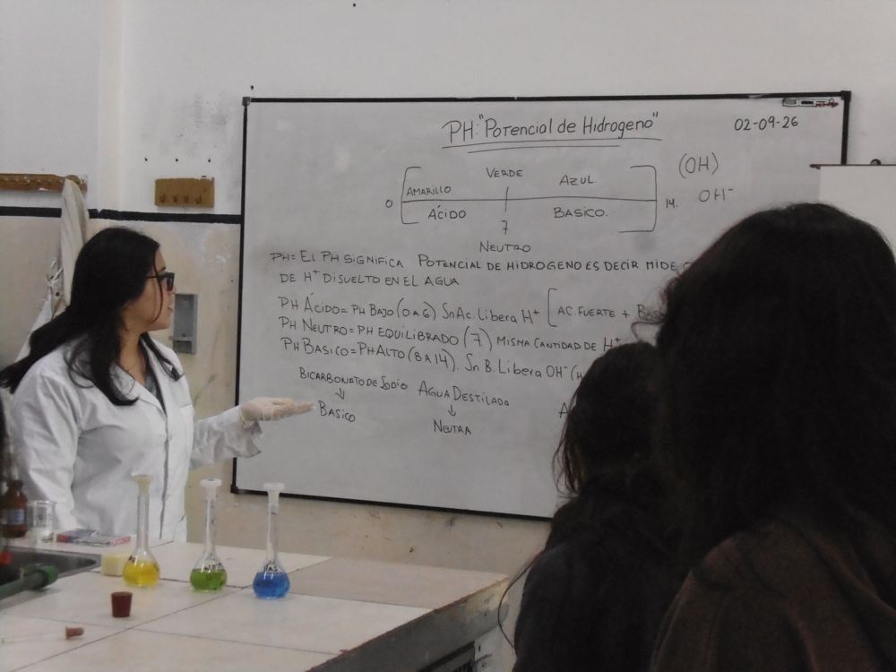
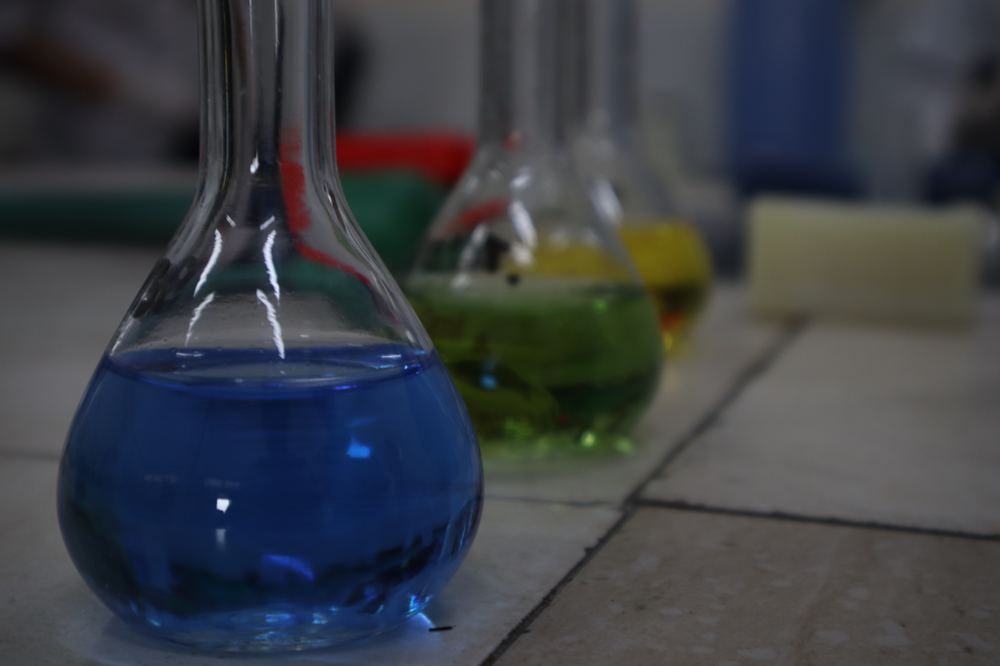

Profes

Un mensaje para los futuros técnicos químicos
Elegir Química es animarse a descubrir, experimentar y aprender algo nuevo cada día. En este camino van a encontrar desafíos, pero también grandes oportunidades para crecer, desarrollar sus habilidades y descubrir de lo que son capaces. No tengan miedo de equivocarse, porque cada error es una oportunidad para aprender. Lo importante es tener curiosidad, compromiso y ganas de superarse. Los invito a confiar en ustedes mismos, a perseguir sus objetivos y a construir su futuro con esfuerzo y dedicación. Recuerden que cada gran descubrimiento comienza con una pregunta. ¡Anímense a elegir Química y a ser protagonistas de su propio futuro!

texto
texto
Video de profes (próximamente)